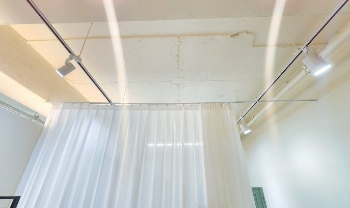
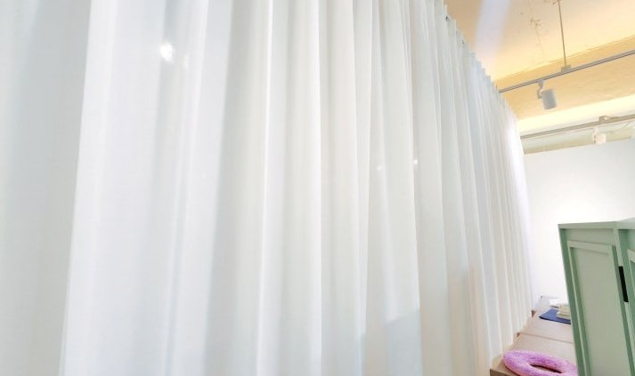
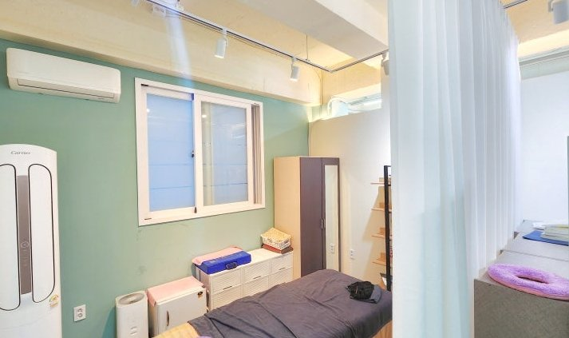
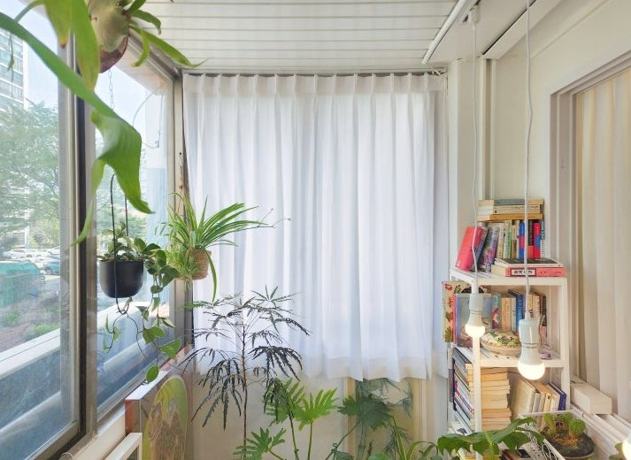

2026년 7월 19일 시공
경산 사동 피부관리샵
헤비쉬폰 칸막이 커튼 시공후기

경산 사동의 한 피부관리샵입니다.
피부관리샵은 손님이 눈 감고 누워 관리를 받는 공간이라, 베드마다 프라이버시가 중요합니다.
그런데 이 매장은 원래 걸려 있던 진한 그레이 커튼이 고민이었습니다.
프라이버시는 확실히 잡아줬지만, 빛을 완전히 막는 원단이라 커튼을 친 안쪽이 동굴처럼 어두웠어요.
매장 전체가 회색빛으로 무겁게 가라앉아 있었습니다.
피부관리샵은 밝고 화사한 분위기가 곧 첫인상인데,
어두운 공간은 손님도 왠지 가라앉는 기분이 들게 합니다.
사장님의 요구는 분명했습니다. "가리긴 가리되, 답답하지 않고 밝았으면 좋겠다."

그래서 어둡던 그레이 커튼을 걷어내고, 천장 레일에 화이트 헤비쉬폰을 넉넉한 주름으로 다시 걸었습니다.
헤비쉬폰은 일반 쉬폰보다 올이 촘촘하고 도톰해서, 한 겹만 달아도 안쪽이 훤히 비치지 않습니다.
그러면서도 불투명 벽이 아니라 빛이 지나는 커튼이라,
베드를 나눠도 매장 전체는 환하게 유지됩니다.
커튼을 쳐 두면 은은한 실루엣만 남고, 공간은 여전히 밝습니다.
가리는 것과 밝은 것, 둘 다 잡는 거죠.

천장 레일 커튼의 또 다른 장점은 유연함입니다.
손님이 있을 땐 쳐서 프라이버시를 지키고, 청소나 재배치가 필요할 땐 걷어서 공간을 넓게 쓸 수 있습니다.
고정된 벽이나 가벽으로는 못 하는 부분이죠.

식물이 놓인 베란다 창에도 같은 화이트 헤비쉬폰을 달았습니다.
이쪽은 채광이 좋은 자리라, 빛을 막기보다 부드럽게 걸러 들이는 게 핵심이었어요.
바깥의 강한 빛과 시선은 순화시키면서, 낮에는 조명 없이도 베란다가 화사하게 밝습니다.
관리실 칸막이와 베란다 창을 같은 원단으로 통일하니, 매장 전체 톤도 한결 정돈됐습니다.
커튼 하나 바꿨을 뿐인데, 무거운 회색이 감돌던 매장이 밝고 화사한 톤으로 완전히 달라졌습니다.
프라이버시는 그대로 지키면서, 어둡고 답답하던 느낌만 사라진 시공이었습니다.
비슷한 시공이 필요하신가요?
창이나 칸막이 자리가 나오게 찍은 사진 한 장이면 대략 견적을 받아보실 수 있습니다.
부재 시 문자를 남겨주시면 빠르게 답변드립니다.